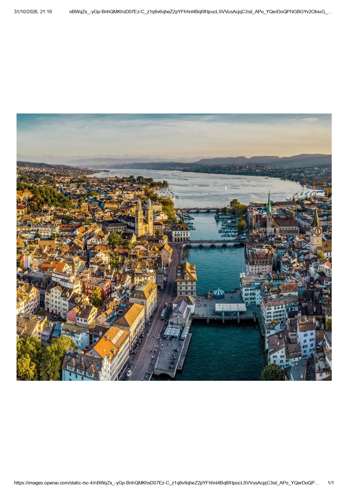
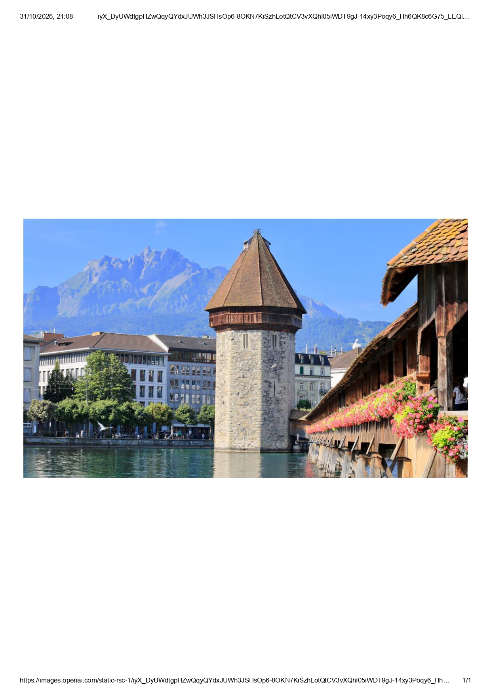
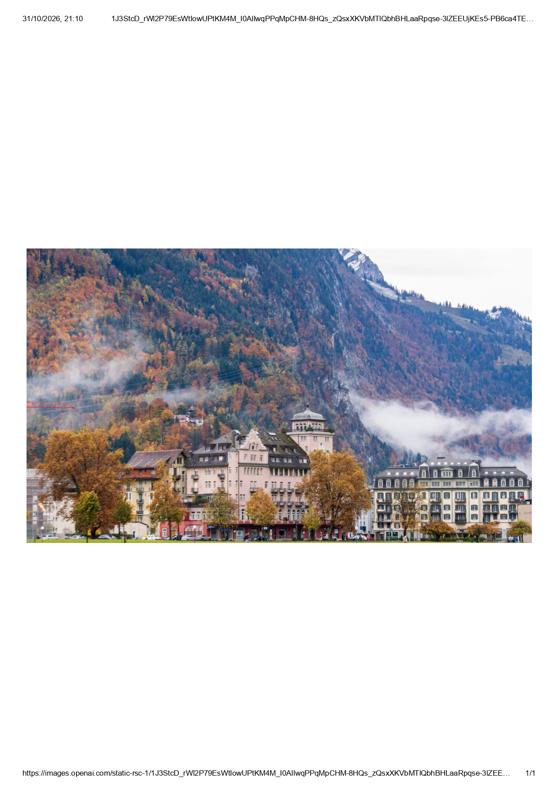
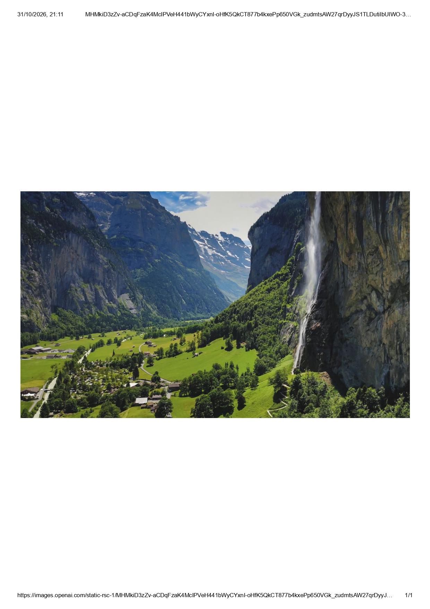

ATLAS / SUÍÇA
Todos os paísesDestinos em Destaque

Zurique
Zurique é perfeita para quem gosta de explorar grandes cidades, fazer compras e conhecer diferentes culturas. Seus visitantes podem passear pelas ruas comerciais, conhecer museus, experimentar a gastronomia local e aproveitar restaurantes e cafés à beira do lago.

Lucerna
Lucerna é um destino encantador para casais que buscam momentos especiais. Suas ruas medievais, pontes históricas e construções à beira do lago criam um cenário romântico. É possível fazer passeios de barco ao pôr do sol, caminhar pelas margens do Lago Lucerna, conhecer cafés aconchegantes e aproveitar jantares com belas vistas das montanhas suíças.

Interlaken
Interlaken é o destino ideal para quem busca aventura na Suíça. Os visitantes podem praticar parapente, saltar de paraquedas, fazer trilhas pelas montanhas e passeios de barco pelos lagos da região. Cercada pelos Alpes, a cidade oferece experiências inesquecíveis para quem gosta de adrenalina e contato com a natureza.

Lauterbrunnen
Lauterbrunnen é um dos destinos mais encantadores da Suíça, localizado em um vale cercado por enormes montanhas dos Alpes.
A região é famosa por suas 72 cachoeiras, incluindo a impressionante Staubbach, uma das mais altas da Europa. Além das paisagens naturais, o local oferece trilhas, passeios ao ar livre e vilarejos tradicionais.
Trabalho e Carreira
Oportunidades profissionais
A Suíça possui um mercado de trabalho diversificado e reconhecido internacionalmente, com destaque para as áreas de saúde, tecnologia, engenharia e construção. A procura por profissionais qualificados torna o país atrativo para trabalhadores de diferentes partes do mundo. Em 2026, a Suíça conquistou o 1º lugar no Henley Opportunity Index, com 86 pontos, ranking que considera fatores como potencial de ganhos, crescimento profissional, educação e qualidade de vida. Para estrangeiros, o conhecimento de idiomas como alemão, francês ou italiano pode ampliar as oportunidades de contratação.
Áreas de trabalho
A Suíça também se destaca pelos salários elevados e pelas boas condições de trabalho. Em 2024, o salário mediano mensal bruto foi de CHF 7.024. Além da remuneração, o país oferece uma infraestrutura que facilita a rotina dos trabalhadores, com uma ampla rede de trens, ônibus e bondes, conhecida pela organização e pontualidade. Apesar das vantagens, é importante considerar o custo de vida elevado, principalmente com moradia, alimentação e saúde, ao avaliar uma mudança para o país.